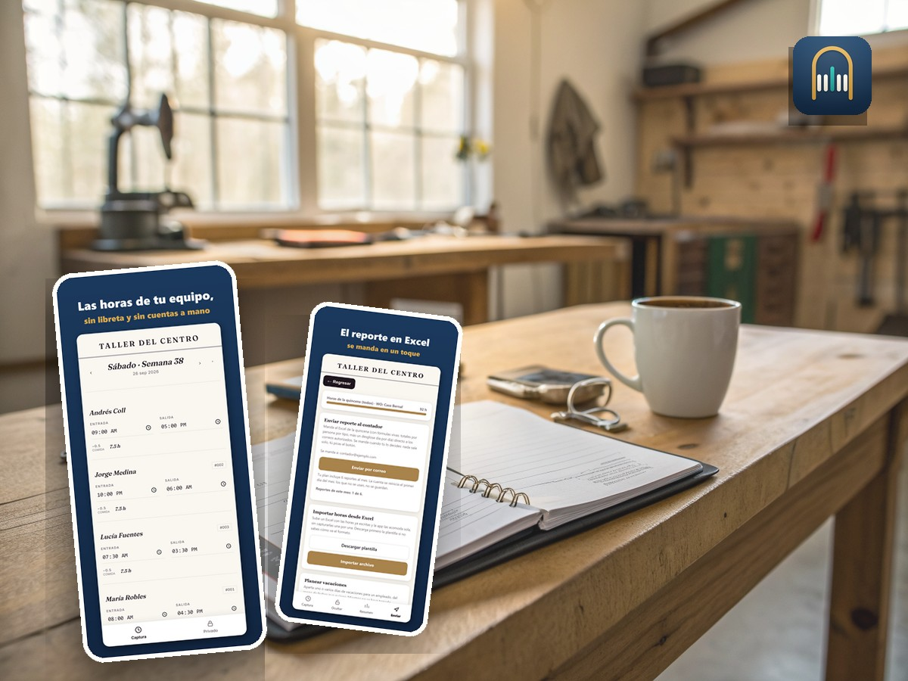

Aymor Quorum
Les heures de votre équipe, saisies sur un téléphone, et le rapport de la quinzaine prêt dans Excel.
Esta ficha está em francês: ainda não a temos escrita em português. A aplicação está em inglês, espanhol, francês.
Ver os planos ↓O que vem dentro
- Vous pointez les heures depuis votre téléphone; vos employés n'installent rien et n'ouvrent pas de compte.
- La demi-heure de repas non payée se retranche toute seule : une demi-heure par tranche de cinq heures de quart.
- Les quarts de nuit, de 22 h à 6 h, se calculent sans jamais sortir en négatif.
- Quorum fonctionne sans internet : le pointage ne se bloque jamais faute de signal.
- Le rapport sort en Excel, à l'en-tête de Quorum, et part par courriel à la personne de votre choix.
Para quem é
Pour les ateliers et les équipes à l'heure. Quorum ne fait pas la paie, ne calcule pas les impôts et ne bâtit pas les horaires de quarts : il vous remet les heures, et votre comptable fait le reste.
Planos
- Por mês29,99 USD
- Por ano329,99 USD
- Cada telefone adicional8,99 USD
- Cada telefone adicional, por ano98,99 USD
- Relatório extra2,99 USD
Antes de pagar
29,99 USD Renova-se sozinho todos os meses até que o cancele.
Cancela quando quiser, num clique, em «A minha subscrição». Sem falar com ninguém. Avisamos entre 30 e 45 dias antes de cada renovação anual, e entre 7 e 30 dias antes de qualquer mudança de preço.
Se compra para o seu negócio, as leis de proteção do consumidor não se aplicam. Marque só se for verdade.
ComprarMarque a caixa para poder pagar.
O botão acende quando a direção abrir a loja.